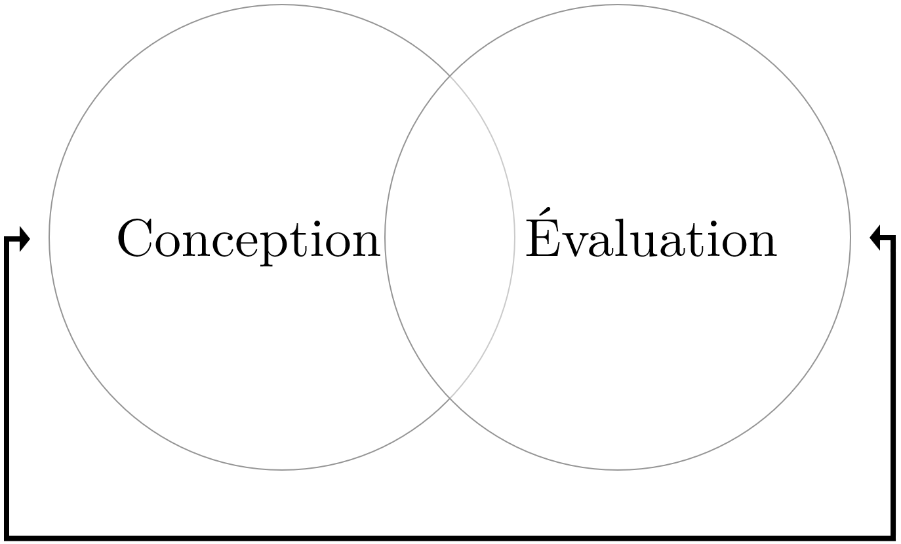
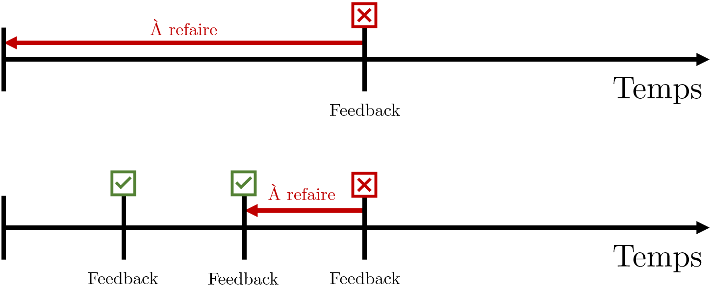
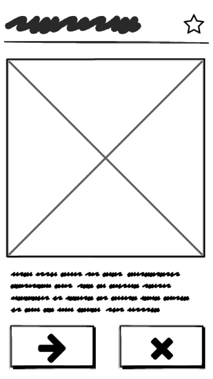
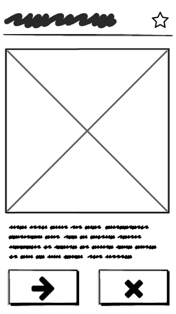
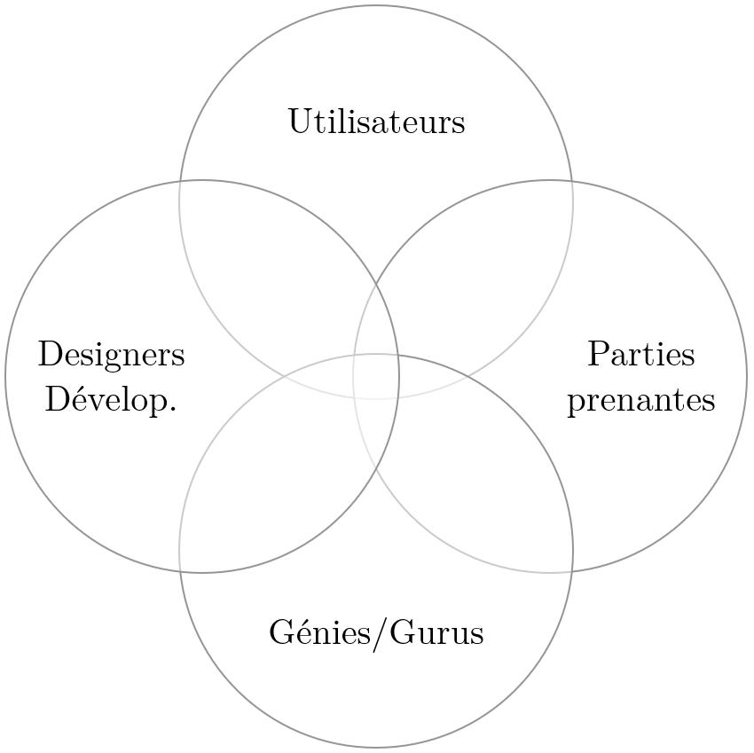

UX pour la conception et évaluation de UI pour le web
Mattia A. Fritz
TECFA, Université de Genève
Le big picture
Human-Computer Interaction = Interaction
Personne-Machine
User eXperience = Expérience Utilisateur
User Interface = Interface Utilisateur
Interaction Personne-Machine
— Shneiderman, 2002
Traduction libre
Principe de base HCI

Expérience utilisateur
L'UX couvre un large domaine d'application, avec plusieurs définitions possibles.
Micro UX
Macro UX
UX encompasses all aspects of the end-user's interaction
with the company, its services, and its products.
— Nielsen-Norman Group
Interface Utilisateur
— McKay, 2013
Traduction libre
Technologie :
"Voulez-vous aller à la prochaine slide
?"
Utilisateur :
"Oui, je veux bien aller à la prochaine
slide, merci !"
Ambivalence du UX dans le web

Adapté depuis The Elements of User Experience par Jesse James Garrett (2000)
Deux grandes fonctions
Un team/professionnel/projet de UX peut s'occuper exclusivement/principalement de l'une ou de l'autre, ou proposer les deux en même temps.
Conception
L'objectif principal de la conception est d'implémenter seulement les fonctionnalités nécessaires pour atteindre les objectifs identifiés/souhaités.
Abstraite
Analyse des besoins, prototype low-fi, ...
Détaillée
Prototype high-fi, maquette interactive, ...
Évaluation
L'évaluation mesure l'adéquation entre les attentes des concepteurs/stakeholders d'une part, et l'utilisation et perception du public cible de l'autre.
Performance
Oculométrie
Test Utilisateur
Perception
Échelles UX
Principes appliqués à l'UX
L'UX utilise plusieurs principes appliqués à la conception et/ou l'évaluation :
-
Principes comportementaux
Principes qui expliquent le comportement des utilisateurs, souvent en lien avec de la recherche fondamentale. -
Principes productifs
Principes de gestion et organisation du cycle de vie d'un dispositif qui essayent de maximiser les résultats en minimisant l'utilisation de ressources. -
Principes de design
Principes ou langages visuels qui déterminent le look-and-feel (e.g. couleurs, formes, ...) d'éléments graphiques de manière homogène et instrumentale.
Liste non exhaustive et non mutuellement exclusive.
Principes comportementaux
L'UX couvre différents aspects du comportement dans une perspective temporelle.
Principes comportementaux
Quelques exemples :
-
Cognitifs/Exécutifs (Intra-personnels)
Temps de reaction, seuil de perception/variation, cécité d'inattention, loi de Fitts, ... -
Sociaux (Inter-personnels)
Interdépendance, désirabilité sociale, conformisme, persuasion, polarization, culture/tradition, ... -
Affectifs (Intra- et inter-personnels)
Préférences, réaction/contagion émotionnelle, émotions esthétiques, design émotionnel, ...
Il arrive parfois que des principes soit banalisés ou détournés
par rapport au sens
fondamental/académique d'origine.
Tension éthique dans l'UX
Les principes comportementaux peuvent être utilisés à des finalités différentes :
Principes productifs
Quelques exemples :
- User-Centered Design
- Interaction Design
- Design Thinking
- ...
Les modèles présentent plusieurs recouvrements, dont le plus important concerne le caractère itératif du processus.
User-Centered Design
Adapté depuis Wikipedia
Interaction Design
Adapté depuis Sharp, Rogers & Preece 2011
Design Thinking
Adapté depuis Hasso-Plattner Institute of Design at Stanford (d.school)
Avantage principal de l'itération
Les cycles itératifs permettent de rapprocher les feedbacks et diminuer la quantité de travail à refaire en cas de problèmes.
Principes de design
Quelques exemples :
- Philosophie de design
- Accessibilité
- Mobile-First design
- ...
Le professionnel UX n'est ni un développeur, ni un graphiste, mais les tendances/techniques de design influencent la conception d'interfaces. Un utilisateur a des expériences et des attentes construites aussi sur la base d'autres interfaces utilisées dans le quotidien.
Philosophies de design


{kind=link}
{kind=link}
Accessibilité
Principes de conception et d'évaluation de l'accessibilité d'interfaces web.
Mobile-First Design
Concevoir d'abord la version mobile et seulement ensuite la version desktop.
Progréssion expérience réelle
 



 Des cycles itératifs peuvent s'effectuer à différents stades de
définition du produit.
Des cycles itératifs peuvent s'effectuer à différents stades de
définition du produit.
Vers un minimum viable product
Cliquez une fois sur la maquette pour pouvoir l'utiliser et l'ouvrir en plein écran avec la touche F. Pour passer à la slide suivante cliquez d'abord hors du cadre noir.
Intégration de feedbacks
L'utilisation d'un modèle centré-utilisateur n'exclut pas d'autres sources d'infos... et de tensions.
Au-delà du binôme UX-UI
UX et UI représentent un binôme soudé, surtout dans les interfaces web, mais il y d'autres applications :
-
Autres manières d'intéragir
Il existe d'autres possibilités pour communiquer avec la technologie (e.g., voix, mouvement, activité cérébrale, ...) et plusieurs principes UX peuvent s'appliquer également à ces contextes. -
Intégration avec des méthodes/cycles de développement
Il existe différentes méthodologies de développement (e.g. Scrum, Agile, ...) qui sont compatibles avec des cycles itératifs du UX. -
Principes UX appliqués à l'entreprise
Plusieurs concepts liés à l'UX sont appliqués à la création ou au fonctionnement d'entreprises, notamment des start-up (e.g. philosophie Lean)
Merci pour votre attention !
Présentation créée avec
Reveal.js.